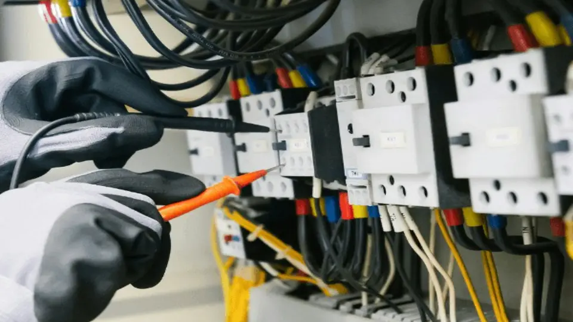

Comissionamento HART: checklist de campo

Uma malha HART combina a variável primária no sinal analógico de 4–20 mA com comunicação digital bidirecional no mesmo par de fios. Por isso, comissionar não é apenas “conseguir comunicar”: é confirmar que identificação, faixa, corrente, variável de processo e diagnóstico contam a mesma história.
O que o HART acrescenta à malha 4–20 mA?
O sinal analógico continua representando a variável primária. Sobre ele, uma comunicação digital por FSK transporta TAG, faixa configurada, unidade, damping, status e outras variáveis do dispositivo. Essa separação é útil no diagnóstico: um problema pode estar no sensor, na conversão para corrente, na fiação, no cartão ou na escala do sistema de controle.
Checklist antes de gravar parâmetros
- Identificação: compare TAG, serviço e endereço/polling com folha de dados e lista de instrumentos.
- Faixa: confira LRV, URV, unidade e função de transferência. Uma escala errada pode produzir corrente coerente para o instrumento e valor incorreto no DCS.
- Damping: confirme o valor aprovado; damping excessivo mascara resposta, enquanto valor muito baixo pode expor pulsação ou ruído.
- Estado do dispositivo: registre alarmes, diagnósticos, proteção contra escrita e revisão do equipamento antes e depois da intervenção.
- Malha: confira polaridade, alimentação disponível, continuidade, blindagem/aterramento conforme projeto e compatibilidade HART dos elementos em série.
Teste funcional em quatro comparações
- Leia a variável primária e a corrente informadas digitalmente pelo instrumento.
- Meça a corrente real com método compatível com o procedimento da malha.
- Compare a corrente com o valor recebido pelo cartão CLP/DCS.
- Compare a unidade de engenharia do sistema com LRV, URV e função configurados no transmissor.
Essa sequência localiza a discrepância. A variável HART pode estar correta e a corrente errada; a corrente pode estar correta e a escala no sistema incorreta; ou ambos podem divergir do padrão aplicado.
Exemplo: 0–10 bar em 12 mA
Em uma escala linear de 0 a 10 bar, 12 mA correspondem a 50% do span, portanto o valor esperado é 5 bar. Se o transmissor informa 5,2 bar via HART e a corrente medida permanece em 12 mA, verifique faixa, simulação, trim de sensor e trim de saída. Se a variável HART e a corrente correspondem a 5 bar, mas o DCS mostra 5,2 bar, a investigação deve avançar para o cartão, a conversão do valor bruto e a escala de engenharia.
Sensor trim e output trim não são sinônimos: o primeiro ajusta a relação entre sensor e variável medida; o segundo ajusta a saída analógica. Aplique apenas o ajuste previsto no procedimento e pelo fabricante.
Critério de encerramento
- TAG, faixa, unidade e damping conferidos contra a documentação vigente.
- Comunicação estável no ponto de conexão previsto.
- Corrente indicada, corrente medida, raw do cartão e valor de engenharia coerentes.
- Alarmes e diagnósticos avaliados, não apenas apagados.
- Parâmetros finais registrados para comparação futura.
Referência técnica
A FieldComm Group descreve os dois canais simultâneos do HART — analógico 4–20 mA e digital FSK — e os dados adicionais disponíveis para diagnóstico.
Ferramenta e conteúdos relacionados
Use o checklist e o diagnóstico como apoio à preparação e ao registro da verificação.
- Checklist de Montagem de Instrumentos em Campo (ferramenta)
- Diagnóstico 4-20 mA e HART (ferramenta)
- Calculadora Resistor Shunt 4-20 mA (ferramenta)
- Checklist de Comissionamento Industrial (ferramenta)
- Resistor shunt 4-20 mA: 250 Ω, 1-5 V e HART (artigo)
- FAT e SAT em instrumentação e automação industrial (artigo)
Aviso técnico
Este material é informativo e orientativo. Não substitui procedimento de comissionamento, projeto da malha, análise de segurança, manual do instrumento, documentação do sistema, validação em campo ou atuação de profissional habilitado. Mudanças permanentes de configuração devem seguir o controle de alterações aplicável.